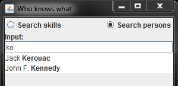

|

|
|
Autocomplete |
|
|
|
|
Autocomplete |
The auto-complete feature enables easy user interaction with the OntoBroker-based application by providing a list of partial textual matches to the user whilst entering an existing term name.

Autocomplete support covers concepts, instances, attributes, and relations. The completion results are basically term names from an ontology matching a user-supplied name prefix (the beginning of a local term name). Optional conditions and search options can be specified to further constrain the search.
The autocomplete functionality is accessible through the AutocompleteHelper class in the package com.ontoprise.indexer. As AutocompleteHelper's package location suggests, it makes use of the indexer infrastructure, that the programmer, however, need not be concerned with other than to ensure that the indexer is enabled in the ontology manager.
The following text briefly explains basic usage of the AutocompleteHelper class (complete source code for an example program is available at the end).
Indexer
Since we are working with ontologies, we first need to instantiate an OntologyManager object as usual, supplying the property values relevant for our environment.
Include the indexer enabling option:
Properties props = new Properties();
...
props.setProperty("FullTextIndex", "on"); // Enable the indexer
OntologyManager manager = KAON2Manager.newOntologyManager(props);
NOTE: Enable the indexer in OntologyManager.
AutocompleteHelper Setup
After setting up an OntologyManager and loading the necessary ontology, we can instantiate the AutocompleteHelper. Completion results can first be retrieved when the index has been rebuilt.
AutocompleteHelper helper = new AutocompleteHelper(manager);
while (!AutocompleteHelper.isIndexUpdateToDate(myOntology)) {
Thread.sleep(100);
}
Before retrieving any completion results, we need to set up an AutocompleteHelper.Options object to pass to the AutocompleteHelper. These options control, amongst other things, how terms are fetched and presented and allow additional search criteria to be specified. Multiple options objects can be kept handy and applied depending on the context in which autocomplete is needed.
A very useful option is the Concept Filter, which allows autocompletion to be limited to just instances of a particular concept. In the code snippet below, we limit the search to instances of the concept Person.
AutocompleteHelper.Options options = new AutocompleteHelper.Options();
Term concept = KAON2Manager.factory().constantIRI("http://www.ontoprise.de/example#Person");
options.setConceptFilter(concept); // Only search instances of Person
A further condition can be imposed on the completion results, where the variable ?OBJ refers to the potential completion suggestion, that would, with no additional filter, be returned. Our example filter eliminates completion suggestions for persons, who are currently on vacation (see the demo program for another example).
options.setAdditionalFilter(
"AND ?OBJ[<http://www.ontoprise.de/example#isOnVacation>->false]");
Retrieving Completion Suggestions
At this point, a first set of completion results can be retrieved. Suppose our ontology contains three instances of concept Person: Jackie, James and Jim. The user first types a "j", that corresponds to the startString parameter in the code below. Consequently, all three instances are fetched and output. The user then continues by typing an "a". Some input handling method calls our code again, this time with the searchString "ja". This time around only the instances Jackie and James are outputted.
CompletionResults results
= helper.getCompletion(ontology, options, Type.Instance, startString, 0, 20);
for (CompletionElement elem : results.getStartingResults()) {
model.addElement(elem);
System.out.println(elem.getDisplay());
}
In this section we have shown how easily the AutoCompleteHelper can be used. For a possible implementation, see the attached program.